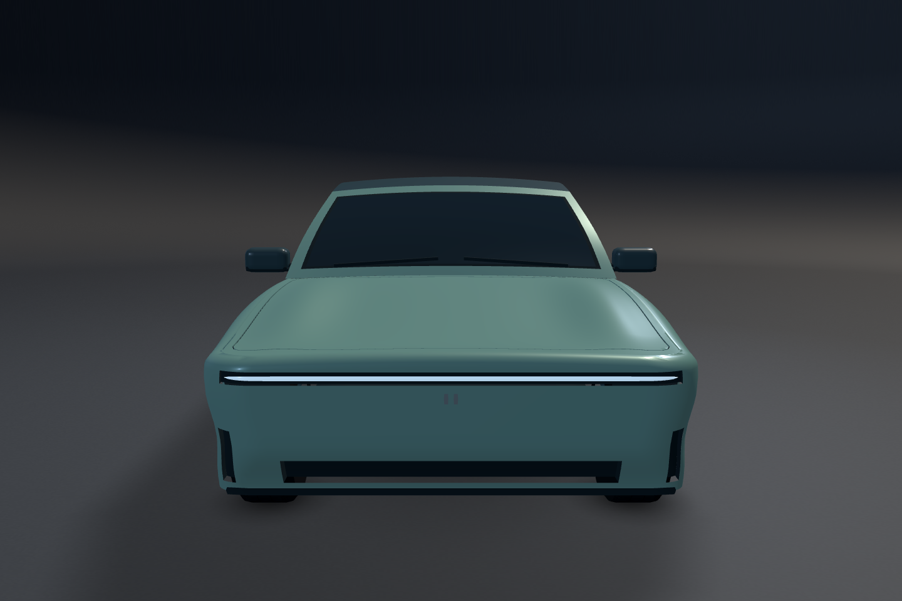
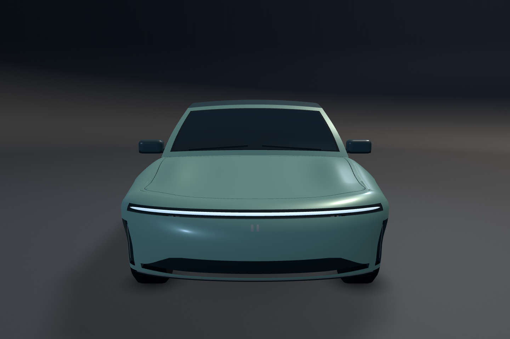
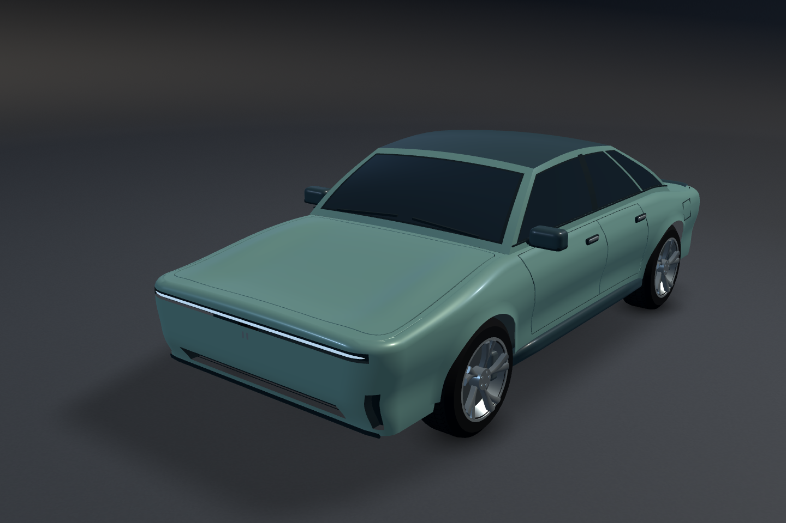
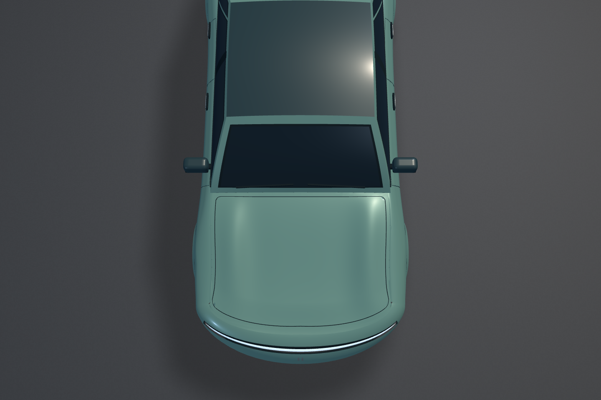
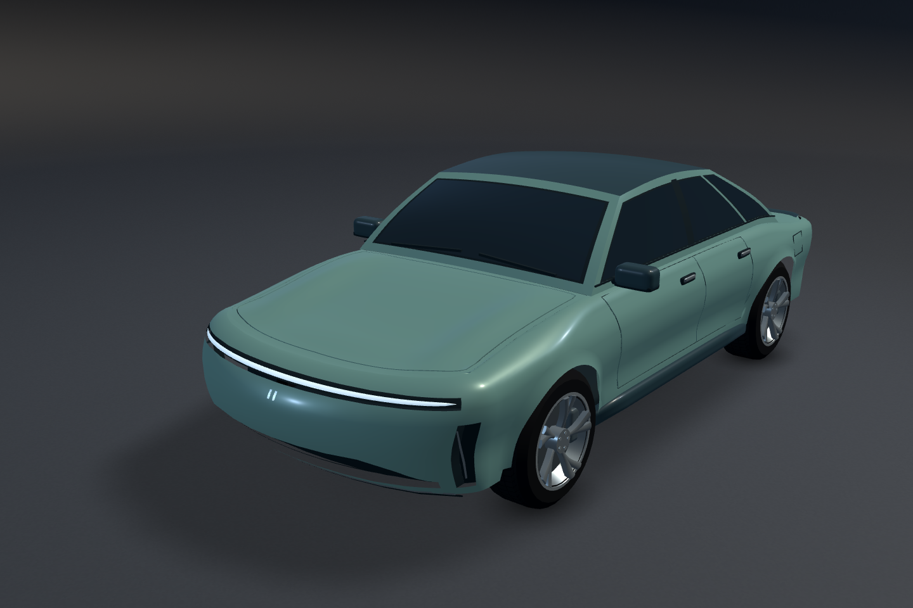
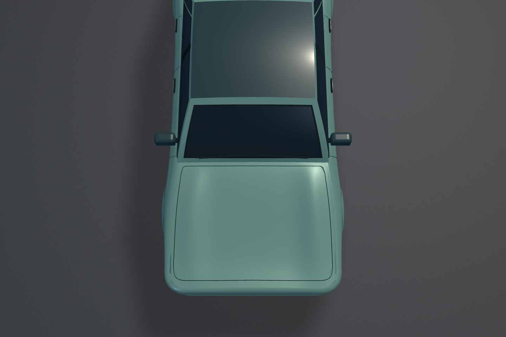
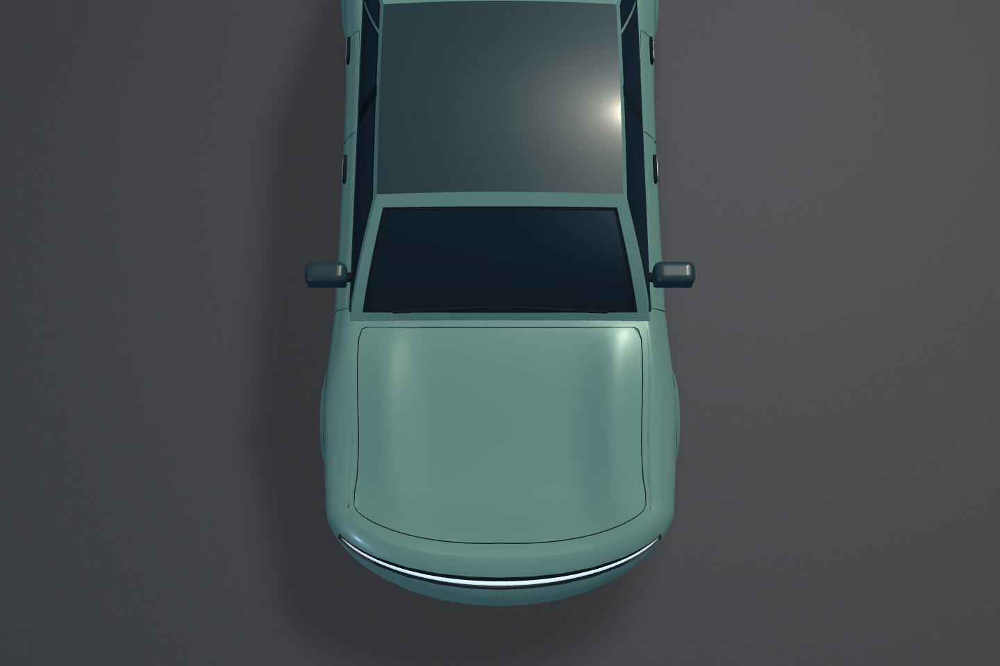

Matched native views of the exact preceding model and the redesigned front. The owner's attached Lucid front photograph guides the new silhouette.
The nose, bumper and wings now curve across the entire front. The lower intake is wider with swept ends; the continuous light follows the bowed surface.
Desktop Mobile head-on view · Actual Garage · Measurements and validation






